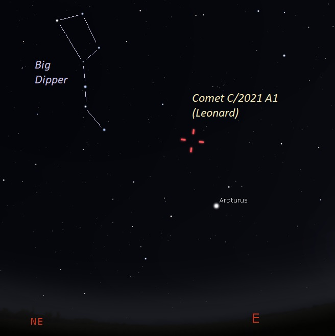

Leonard ကြယ်တံခွန်ဆိုတာဘာလဲ
၂၀၂၁ ခုနှစ် ဇန်နဝါရီ ၃ ရက်နေ့မှာ အရင်က တခါမှ မတွေ့ဖူးခဲ့တဲ့ ကြယ်တံခွန် အသစ် တစ်စင်းကို နက္ခတ် သိပ္ပံ ပညာရှင် ဂရီဂိုရီ လဲ့နာတ် (Gregory J. Leonard) က အမေရီကန် ပြည်ထောင်စု အရီဇိုးနား ပြည်နယ်မှာ ရှိတဲ့ မောင့်လယ်မွန် နက္ခတ်မျှော်စင် (Mount Lemmon Observatory in Arizona, USA) ကနေ ရှာဖွေ တွေ့ရှိ ခဲ့ပါတယ်။ရှာဖွေ တွေ့ရှိ ခဲ့စဉ်က သူ့ကို C/2021 A1 ဆိုပြီး အမည် သတ်မှတ် ခဲ့ပါတယ်။ ဒီ နေရာမှာ C ဆိုတာက ပုံမှန် အချိန်မှန် ပြန်လာလေ့ မရှိပဲ ရံဖန် ရံခါ မှသာ ကြဘမ်း ရောက်လာ ကြတဲ့ ကြယ်တံခွန် တွေကို သတ်မှတ်တဲ့ သတ်မှတ်ချက် တစ်ခု ဖြစ်ပါတယ်။ A1 ဆိုတာကတော့ ၂၀၂၁ ရဲ့ ဇန်နဝါရီ လ ပထမပိုင်း (၁၅ ရက်နေ့ မတိုင်မီ) ကာလအတွင်းမှာ ပထမဆုံး ရှာတွေ့ခဲ့ လို့ ဖြစ်ပါတယ်။
ဒီ လဲ့နာတ် ကြယ်တံခွန်ရဲ့ထူးခြားချက် ကတော့ သူ့ရဲ့ အလွန် မြန်တဲ့ အရှိန်နှုန်းပဲ ဖြစ်ပါတယ်။ ဒီ ကြယ်တံခွန်ဟာ တစ်စက္ကန့်ကို ၇၀ ကီလိုမီတာ (၄၃ မိုင်) နှုန်းနဲ့ ခရီးနှင် နေတာ ဖြစ်ပါတယ်။ ဒီ အမြန်နှုန်းဟာ မနှစ်က လာခဲ့တဲ့ NEOWISE ကြယ်တံခွန်ထက် တစ်စက္ကန့်ကို ၆ ကီလိုမီတာ (၃ မိုင်ခန့်) ပိုမြန်နေပါတယ်။
ဒီလို အရှိန် မြန်လွန်းတဲ့ အတွက် ကောင်းကင်မှာ မြင်ရမယ့် ကြယ်တံခွန်ရဲ့ တည်နေရာ ကလဲ ညစဉ် ပြောင်းလဲနေမှာ ဖြစ်ပါတယ်။
ဒီ ကြယ်တံခွန်ရဲ့ ပတ်လမ်းဟာ ဟိုက်ပါဘိုလာ (Hyperbolic path) ပုံ ဖြစ်နေပါတယ်။ ဒါကို အလွယ် နားလည်အောင် ပြောရရင် ဒီကြယ် တံခွန်ဟာ နေအဖွဲ့အစည်းကို တစ်ကြိမ်ပဲ ဖြတ်ပျံမှာ ဖြစ်ပြီး နေနဲ့ ဝေးရာကို ပျံသန် ပျောက်ကွယ် သွားမှာ ဖြစ်လို့ နောက်နောင် ဘယ်တော့မှ ပြန်တွေ့ရ တော့မှာ မဟုတ်တော့ပါဘူး။
ဘယ်တော့ကမ္ဘာကမြင်ရမှာလဲ
ဒီ ကြယ်တံခွန်ဟာ ကမ္ဘာနဲ့ အနီးဆုံး နေရာကို ၂၀၂၁ ခုနှစ် ဒီဇင်ဘာ ၁၂ ရက် နေ့မှာ ရောက်ရှိလာမှာ ဖြစ်ပါတယ်။ ဒီရက်မှာ ကမ္ဘာကို အကွာအဝေး ကီလိုမီတာ ၃၄ သန်း (မိုင် ၂၁ သန်း) အကွာကနေ ဖြတ်ပြီး ပျံသန်းသွားမှာ ဖြစ်ပါတယ်။ ဒီ အချိန်မှာ သူ့ရဲ့ တောက်ပမှုက အဆင့် ၄ (Magnitude 4) ရှိနေမှာပါ။ ဒီအချိန်မှာ ကြယ်တံခွန်ဟာ ကမ္ဘာနဲ့ နေကြား ရောက်ရှိနေမှာမို့ သူ့ရဲ့ တောက်ပမှုဟာ အဆင့် ၁ ထိတောင် ရှိကောင်း ရှိနိုင်ပါတယ်။(ကြယ်တွေရဲ့ တောက်ပမှု အဆင့်က နည်းလေ ပိုတောက်ပ လေပါ။ အဆင့် ၁ က အဆင့် ၄ ထက် ပိုတောက်ပပါတယ်။ လပြည့် လ ရဲ့ တောက်ပမှုက -၁၃ (အနှုတ် ၁၃) ရှိပြီး နေရဲ့ တောက်ပမှုကတော့ -၂၇ (အနှုတ် ၂၇) ရှိပါတယ်။)
ဒီကာလမှာ ဒီ ကြယ်တံခွန်ကို မြေပြင် အလင်းရောင် သိပ်မရှိတဲ့ တောပိုင်းတွေမှာ သာမန်မျက်စေ့ နဲ့တောင်မှ မြင်တွေ့နိုင်မှာ ဖြစ်ပါတယ်။။
လဲ့နာတ်ကြယ်တံခွန်ကိုဘယ်လိုမြင်ရမှာလဲ
လဲ့နာတ် ကြယ်တံခွန် ဟာ အလင်းရောင် တောက်ပမှု အမြင့်ဆုံး ကို ရောက်ရင် ဖုန်မှုန့် အမြီးရှည် နဲ့ ဓါတ်ငွေ့ အမြှီးရှည်တွေ ထွက်ပေါ်လာမှာ ဖြစ်ပါတယ်။ ဖုန်မှုန့် အမြှီးရှည်ကို သံချွန် တစ်ချောင်းလို သွယ်သွယ် ချွန်ချွန်လေး တွေ့ကြရမှာ ဖြစ်ပါတယ်။ဒီလို ဘာ့ကြောင့် မြင်ကြရလဲဆိုတော့ ဒီဇင်ဘာ ၈ ရက်နေ့မှာ ကမ္ဘာဟာ ကြယ်တံခွန်ရဲ့ ပတ်လမ်း ပြင်ညီ (Orbital plane) ကို ဖြတ်မှာ ဖြစ်တဲ့အတွက် ကမ္ဘာပေါ်က ကြည့်ရင် ဘေးတိုက် ဖြစ်နေလို့ ဖြစ်ပါတယ် (ဓါးတစ်ချောင်းကို အသွားဖက်က ကြည့်ရင် ပါးပါးလေး မြင်ရသလိုမျိုးပါ။) ဒီ့အတွက် ကြယ်တံခွန်ရဲ့ ဖုံမှုန့် အမြီးကို သေးသေး သွယ်သွယ်နဲ့ အရောင် တောက်တောက်လေး တွေ့ကြရမှာ ဖြစ်ပါတယ်။
လက်ရှိ အချိန်မှာ ဒီ ကြယ်တံခွန် မှာ ဓါတ်ငွေ့ အမြှီး ပေါက်နေပါပြီ။ ကြယ်တံခွန်ကို မြင်ရတဲ့ ကာလ အပိုင်းအခြား အတော်များများ မှာတော့ ဓါတ်ငွေ့ အမြှီးနဲ့ ဖုန်မှုန့် အမြှီးတွေဟာ တူညီတဲ့ ဖက်ကို ဉီးတည် နေကြမှာ ဖြစ်ပါတယ်။ ဒီဇင်ဘာ ၁၀ ရက်နဲ့ ၁၃ ရက် အကြား ကာလ တိုလေး အတွင်းမှာတော့ အမြီး နှစ်ခု ကို ၃၀ ဒီဂရီလောက် စောင်းနေတာ တွေ့ကြရ မှာပါ။
ဒီ ကြယ်တံခွန်မှာ အမြှီး နှစ်ခုနဲ့ ဆန့်ကျင်ဖက် အရပ်ကို ဦးတည်နေတဲ့ ဆန့်ကျင်အမြှီး (Anti-tail) ရှိကောင်း ရှိနိုင်ပါတယ်။ ဒီ အမြှီး ကတော့ နေရှိရာ ဖက်ကို ဦးတည်နေမှာ ဖြစ်ပါတယ်။ တကယ်က ဆန့်ကျင်ဖက် အမြှီး ဆိုတာက တကယ် ရှိတာ မဟုတ်ပဲ ပုံရိပ်ယောက် တစ်ခု အနေနဲ့ မြင်ရတာပဲ ဖြစ်ပါတယ်။
ဘယ်တော့ကျွန်တော်တို့စမြင်နိုင်မလဲ
သင်သာ ကမ္ဘာ့ မြောက်ခြမ်းမှာ နေထိုင်ပြီး နက္ခတ်ကြည့် တယ်လီစကုပ် မှန်ပြောင်း တစ်လက်လောက် ပိုင်ဆိုင်မယ် ဆိုရင် ဒီ ကြယ်တံခွန်ကို အခုပဲ စပြီး မြင်နိုင်နေ ပါပြီ။ လက်ရှိ အချိန်မှာ ဒီ ကောမက်ရဲ့ အလင်းပြင်းအားက အဆင့် ၈ လောက် ရှိနေပြီ ဖြစ်ပါတယ်။ အလယ်အလတ်စား အရွယ်ရှိတဲ့ နက္ခတ် မှန်ပြောင်းတွေနဲ့ ကြည့်မယ်ဆို မြင်ရနေ ပါပြီ။နက္ခတ်ကြည့် တယ်လီစကုပ် မပိုင်ဆိုင်တဲ့ သူတွေ အတွက်ကတော့ လာမယ့် ဒီဇင်ဘာ လဆန်းအထိ စောင့်ဖို့ လိုပါမယ်။ ဒီဇင်ဘာ လရဲ့ ပထမ နှစ်ပါတ် အတွင်းမှာ ကမ္ဘာကနေ သာမန် မှန်ပြောင်း တလက်နဲ့ လှမ်းမြင် နိုင်လိမ့်မယ်လို့ ဆိုပါတယ်။ မြေပြင် အလင်းရောင် နည်းတဲ့ အချို့ အရပ်တွေမှာ သာမန် မျက်စေ့နဲ့တောင် လှမ်းမြင်ရ နိုင်ပါတယ်။
ဒီဇင်ဘာ လနှောင်းပိုင်လောက် ရောက်တော့ ကြယ်တံခွန်ဟာ ကမ္ဘာ တောင်ဖက်ခြမ်း ရှိတဲ့ ကောင်းကင်ကို ရောက်ရှိလာမှာ ဖြစ်ပါတယ်။ ခရစ်စမတ်နေ့ (ဒီဇင်ဘာ ၂၅) ရက်နေ့မှာ ကမ္ဘာ့ တောင်ခြမ်းက သူတွေ မြင်ကြရမှာ ဖြစ်ပါတယ်။
ဒီကြယ်တံခွန်ကို ဘယ်လို ရှာမလဲ
ဒီ ကောမက်ကို အလွယ်တကူ ရှာဖွေ နိုင်ဖို့ Star Walk 2 App ကို ဖုန်းမှာ ထည့်သွင်း အသုံးပြုပြီး အလွယ်တကူ ရှာဖွေ နိုင်ပါတယ်။အကယ်လို့ ဖုန်းမှာ App ထည့်ရတာ အဆင်မပြေ ဘူးဆိုရင် မနက်စောစော နေမထွက်မီ ၁ နာရီ ခန့်မှာ အရှေ့ဖက် မိုးကောင်းကင် မှာ ရှာကြည့်လို့ ရပါတယ်။ ခုနှစ်စဉ် ကြယ်ကို ရှာဖွေပြီး ခုနှစ်စဉ် ကြယ်ရဲ့ အမြှီးနား ဝန်းကျင်မှာ ရှာကြည့်လို့ ရပါတယ်။ ကောင်းကင်ကို အလင်း မဟပ်တဲ့ အရပ်ဒေသ (မြို့ပြတွေနဲ့ ဝေးရာ အရပ်) ဖြစ်ဖို့တော့ လိုပါလိမ့်မယ်။ ကြယ်တံခွန်က အလွန် မြန်တာမို့ သူ့ရဲ့တည်နေရာဟာ ကောင်းကင်မှာ နေ့စဉ်နှင့် အမျှ ပြောင်းလဲနေမှာ ဖြစ်ပါတယ်။
